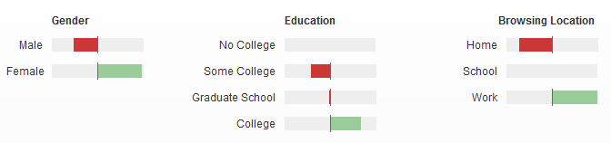

Discovery
Site Intent
Overview
N2NSites is a local leader in business intelligence and market research analysis. They are requiring a website to showcase a new product being developed for their clients. There are also several additional features and elements that will need to be addressed during this project.
New Product Showcase
The new product is a competitive tracking tool that will be utilized by multiple clients simultaniously. The product will be hosted on a seperate hosting and domain system then this site. The product will be showcased and features explained on this site. There will be links and multimedia showing the products features and where it can be accessed.
Additional Goals
The client would like to incorporate a CMS (Content Management System) to be able to edit and/or post new content weekly. The client also requested the ability to incorporate social media elements into the design as well.
Competitive Analysis
Website Keywords
social media agency, social media metrics, social media analyse, social media analytics, social media analysis, social media measurement, social media agencies, free social media monitoring, social media monitoring software, social media plan, social media software, social media b2b, social media strategy, social media packages, social media monitoring companies, b2b social media, social media listening tools, social media tracking, social media analytics tools, social media monitoring free, social media listening, social media consulting, social media measurement tools, social media consultants, social media strategie, monitoring social media
Hanley Wood
www.hanleywood.com
Demographic:
Home and Commercial Builders
Desired Features
- Like the layout of content.
- Product showcasing
Statistics

RSI - Residential Strategies Inc.
www.residentialstrategies.com
Demographic:
Home and Commercial Builders
Desired Features
- None. (Site is outdated)
Statistics
NONE AVAILABLE...
Targeted Audience
Pulte Group Inc.
www.pultegroupinc.com
PulteGroup has been providing the American Dream of homeownership to families for more than 60 years. What started as a single home built and sold by the entrepreneurial spirit of an 18-year-old Bill Pulte, has grown into the industry’s sole multi-brand homebuilding company with the ability to serve customers in all phases of life. Today, PulteGroup operates in approximately 50 markets throughout the country.
NVR Inc.
www.nvrinc.com
NVR, Inc. operates in two business segments: homebuilding and mortgage banking. The homebuilding unit sells and constructs homes under the Ryan Homes, NVHomes, Fox Ridge Homes and Heartland Homes As a corporate entity, NVR, Inc. provides various support functions for each of its sub-entities. These include sales and marketing support, vital human resource specialists, and an advanced information technology department, which provide a network of resources utilized by NVR, Inc. holdings.